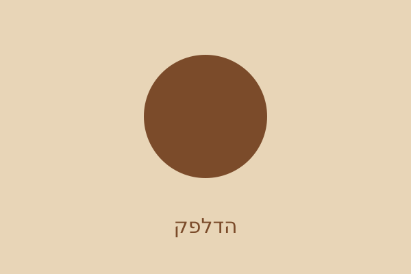
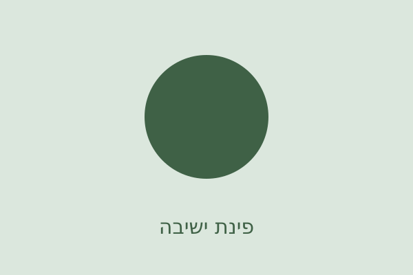

עלינו
ב-2015 שכרנו חנות ירקות נטושה ברחוב הרצל, וקנינו מכונת אספרסו יד שנייה שעבדה רק אחרי בעיטה. את הבעיטה החלפנו מאז. את המכונה לא.
אנחנו מעסיקים חמישה אנשים, קונים פולים משתי חוות בקולומביה ובאתיופיה, ומגישים בערך 300 ספלים ביום.
איך מגיע אליכם ספל
- הפולים נקלים אצלנו ביום שלישי בבוקר.
- נחים 48 שעות – בלי זה הקפה מריר.
- נטחנים לפי ההזמנה, לא מראש.
- מיצוי של 27 שניות, נמדד בשעון.
גלריה

